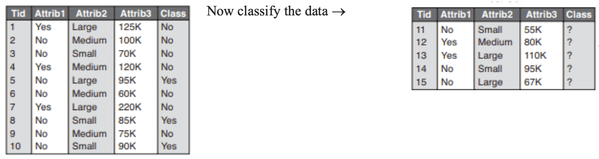
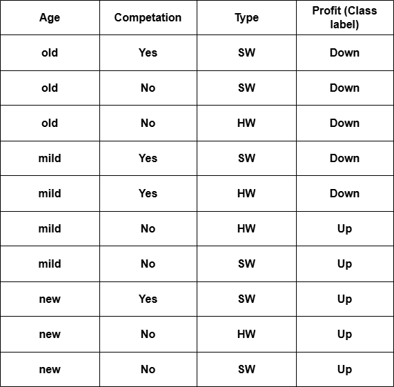

Chapter-Wise Important Exam Questions Bank (Offline Copy)
Write a program to create a class MOVIE with attributes name and genre. Write the movies with genre comedy on COM.DAT file.
What is a package? Differentiate between method overloading and overriding.
Write a program to input the name of faculty and throw an exception if that input is not "CSIT".
How is exception different from error? Differentiate throws and throw keywords. When is the block finally important?
What is the difference between final, finally, and finalize keywords in Java?
Why is multithreading important? Explain thread life cycle with proper state diagram. Write a program that reads data of employees from the keyboard and write it into the file emp.doc using proper exception handling with try...catch blocks.
Assume that a text file named "ONE.TXT" contains a paragraph of text. Write a program to copy the word that starts with vowel from "ONE.TXT" to another file "TWO.TXT".
class A {
class B {
public void test() {
int i = 0;
while (i <= 100) {
System.out.println(i);
i = i + 2;
}
}
}
}
Suppose that 9 integers are written in a file named "magic.txt" in the arrangement of 3 × 3 separated by space. Write a program to check whether the integers in all rows, all columns, and both diagonals sum to the same constant or not.
Describe the role of Result Sets. What is wrong in the following code?
public class Point {
int p;
public void setP(int p) {
p = p;
}
}
Why do we need to synchronize the thread? Justify with an example. An array with an odd number of elements is said to be centered if all elements (except the middle one) are strictly greater than the value of the middle element. Note that only arrays with an odd number of elements have a middle element. Write a function that accepts an integer array and returns 1 if it is a centered array, otherwise it returns 0.
When thread synchronization is necessary? Explain with suitable example.
Write a java program that writes objects of Employee class in the file named emp.doc. Create Employee class as of your interest.
What are the uses of final modifier? Explain each use of the modifier with suitable example.
Write short notes on:
What is multithreading? How can you create multithreaded program in Java? Explain.
Explain feature of object-oriented programming. Create a class Distance with private variables feet of type integer and inches of type floating point. Use suitable constructor, and methods for adding and comparing two distance objects. [Hint: 1 feet = 12 inches]
Do we still need Java Applet? Justify. Give the hierarchy of Swing class.
Write a program to demonstrate the concept of internal frame.
Write a program to design a layout of a simple calculator. (Arithmetic operation not required.)
Write a program to create a form with employee id, name, salary fields and two buttons add and cancel using appropriate components.
Explain flow layout manager with suitable constructors and demonstrate it by using suitable java code.
Write a program that divides the frame into five regions by using border layout and then add panels in the east, north and center region. Finally add some descriptive label in the north panel, buttons with icon in the east panel and a sample form in the center panel. You can further subdivide the center panel, if necessary. Prepare a program with three text boxes First Number, Second Number, and Result and four buttons add, subtract, multiply and divide. Handle the events to perform the required operation and display results.
Write a program to create a menu named "File" with menu items "New," "Save," and "Exit".
When do we need an internal frame? How do you create a table using Swing?
Describe any two types of Layout manager. Using swing components, design a form with three buttons with captions “RED,” “BLUE,” and “GREEN,” respectively. Then write a program to handle the event such that when the user clicks the button, the color of that button will be the same as its caption.
What are layout managers? Explain Gridbag layout with suitable example.
What is grid layout? Compare grid layout with grid bag layout.
Why do we need layout management? Explain any two layout managers with example. Write a simple GUI program that displays "Hello World" in a text field. The program should display output if user clicks a button.
Write a program to insert an icon in the frame and when the user presses the up arrow, it will move upward.
What is an adapter class? Explain advantages of adapter classes over listener interfaces with suitable examples.
What is the use of action command in event handling? Explain with example.
Write a java program to create login form with user id, password, ok button, and cancel button. Handle key events such that pressing ‘l’ performs login and pressing ‘c’ clears text boxes and puts focus on user id text box. Assume user table having fields Uid and Password in the database named account.
Why do we need event handling? Explain the use of action event with example.
Discuss about JSP implicit objects. Assume a database with the table TEACHER (ID, Name). Now using JDBC, execute the following SQL query:
select * from TEACHER;
insert into TEACHER values (8, 'Ramesh');
select name from TEACHER where ID = 9;
What is a prepared statement? When is it useful? Explain its use with suitable java code.
What do you mean by SQL escape? Describe about scrollable and updateable result sets.
Assume a table MOVIE(id, title, genre). Now, using JDBC, perform the
following queries:
a. Add any three records to the MOVIE table.
b. Using a prepared statement,
update the genre to "Comedy" having the title "Jatra".
What causes SQL exception? How it can be handled? Explain with example.
Explain JDBC driver types. What is scrollable result set?
What are the uses of focus and item event? Write a socket program using UDP to create three programs, two of which are clients to a single server. Client1 will send a character to the server process. The server will circularly decrement the letter to the previous letter in the alphabet and send the result to Client2. Then Client2 prints the letter it receives and then all the processes terminate.
Write the steps for writing client and server programs using TCP with a suitable example.
What is the task of the Listener interface? Write a socket program for a file server that makes a collection of files available for transmission to clients. When a client connects to the server, the server first reads a one-line command from the client. The command string can be of the form "GET <filename>", where <filename> is a file name. The server checks whether the requested file actually exists. If so, it first sends the word "OK" as a message to the client. Then it sends the contents of the file and closes the connection. Otherwise, it sends "ERROR" to the client as message and closes the connection. Assume that there is no sub directories.
Write a TCP client-server system in which the client program sends two integers to a server program, which returns the greatest among them.
Write a JavaFX application that creates a ChoiceBox with a list of colors. Display a label that changes its text based on the selected color from the ChoiceBox. Write down steps for writing CORBA programs with a suitable example.
What is JavaFX? How it is different from swing. Write a JavaFX program to create a form to read two numbers and display their sum on button click.
Write a JavaFX application with components, buttons, text fields, and labels, arranged in a VBox or HBox layout.
How JavaFx differs from Swing? Explain steps of creating GUI using javaFx.
What is JavaFX? Compare it with swing. Explain FlowPane layout of JavaFX.
Describe the life cycle of a servlet.
How do you handle HTTP request and response using JSP? Illustrate with an example.
What is Servlet? Create an application where an HTML file displays a form containing field company name, city and ESTD and a save button and when we click on save button it must save records in the database.
How do you insert pop-up menu? Distinguish between GET and POST request.
Explain the life cycle of servlets.
What do you mean by JSP implicit objects? Discuss Java Mail API.
How does JSP differ from Servlet and show the life cycle of Servlet? How do you create and read the cookies and session using JSP? Illustrate with an example.
What are different ways of writing servlet programs? Write a sample Servlet program using any one way.
Discuss various scopes of JSP objects briefly. Create a HTML file with principal, time and rate. Then create a JSP file that reads values from the HTML form, calculates simple interest and displays it
Write a java program using TCP such that client sends number to server and displays its factorial. The server computes factorial of the number received from client.
Compare JSP with servlet. What are different implicit objects in JSP?
Define JSP. What are the benefits of using JSP? Create a HTML file with two text fields to first name and last name. Create a JSP file that reads data from the HTML form and display full name.
Explain life-cycle of servlet in detail. Create a simple servlet that reads and displays data from HTML form. Assume form with two fields username and password.
What is RMI? Discuss stub and skeleton. Explain its role in creating distributed applications.
List the steps to create an RMI application. Differentiate between RMI and CORBA.
How CORBA differs from RMI? Discuss the concepts of IDL briefly.
What is data mart? Why do we need multidimensional data model?
What is a data warehouse? How is it different from a database? What is data mart?
When do we prefer trim mean for statistical description of data? Justify with an example. Describe about multi-dimensional data model and conceptual modeling of data warehouse.
List any two OLAP operations with example. How do you compute rule coverage and rule accuracy?
Explain the different components of data warehouse. How data cube precomputation is performed? Describe.
Why the concept of data mart is important? Discuss different data warehouse schema with examples.
Explain the OLAP operations with examples.
Write down short notes on:
Write down short notes on:
Why OLAP operations are used? Discuss various OLAP operation with suitable example of each.
Write down any one advantage and disadvantage of MOLAP over ROLAP. Define signed network and how do you check whether it is balanced or not? How beam search reduces the space complexity? Illustrate with an example.
Differentiate between star schema and snow flake schema. List any two methods for data normalization.
Describe the different types of data object and attribute types.
What is KDD? Explain with a suitable block diagram.
How KDD differs from data mining? Explain various stages of KDD with suitable block diagram.
Discuss different types of attributes with suitable example of each.
When a pattern is said to be interesting? List the issues of data mining.
Explain about data mining primitives.
What is centroid based clustering? Why is k-means clustering called a centroid based clustering algorithm? Cluster the following instances of given data with the help of K means algorithm (Take K = 2, use first and last data points as initial centroids):
| Instance | X | Y |
| P1 | 2 | 3 |
| P2 | 3 | 4 |
| P3 | 6 | 8 |
| P4 | 7 | 9 |
| P5 | 8 | 10 |
| P6 | 9 | 11 |
Describe any two methods of handling noisy data.
Discuss different ways of smoothing noisy data along with suitable examples.
Why data normalization is important in data mining? Explain min-max and Z-score normalization approach.
How concept hierarchy is used in extracting information? Generate the frequent pattern from the following data set using FP growth, where minimum support=3.
Define data discretization. Describe the tasks for data preprocessing.
What is data cube? List the different variations of cube materializations.
What is Cube materialization? Define Full cube, Iceberg cube, closed cube and Shell cube.
What is data integration? What is data reduction? Why is data preprocessing important?
Explain the general strategies for cube computation.
How many cuboids are possible from 5-dimensional data? Discuss the concept of full cube and iceberg cube.
Suppose that we have 5 dimensional data. What will be total number of cuboids generated? If we consider each dimension has 5 levels, what will be the number of cuboids generated?
What are the choices for data cube materialization? Explain the strategies for cube computation.
Define strong association rule. What are the limitations of Apriori algorithm? Create a FP tree from the following data set.
| TID | List of Items |
|---|---|
| T1 | {A, B, C} |
| T2 | {B, C, D} |
| T3 | {C, D} |
| T4 | {B, D} |
| T5 | {A, C} |
| T6 | {A, C, D} |
What is the Apriori principle? How is it used by the Apriori algorithm for frequent pattern mining? What are the limitations of Apriori approach? Use the APRIORI algorithm to generate strong association rules from the following transaction database. Use min_sup=40% and min_confidence=75%.
| Transaction ID | Items Purchased |
| T1 | Bread, Milk, Eggs, Butter |
| T2 | Bread, Milk, Cheese |
| T3 | Milk, Eggs, Cheese, Yogurt |
| T4 | Bread, Butter, Cheese |
| T5 | Bread, Milk, Butter, Yogurt |
What is a frequent pattern? What is market basket analysis? Explain it with suitable examples.
How do you generate strong association rules? From the following dataset find the frequent item set using FP growth algorithm using 3 as minimum support.
| Transaction ID | Items |
| T1 | {K, E, M, O, Y} |
| T2 | {K, E, O, Y} |
| T3 | {K, E, M} |
| T4 | {K, M, Y} |
| T5 | {K, E, O} |
Given the following data set, find the frequent itemset using Apriori algorithm with minimum
support 3. (5)
T1 {A, B, C, D, E, F}
T2 {B, C, D, E, F, G}
T3 {A, D, E, H}
T4 {A, D, F, I, J}
T5 {B, D, E, K}
State Apriori property. Find frequent item sets and association rules from the transaction database given below using Apriori algorithm. Assume min. support is 50% and min confidence is 75%.
| Transaction ID | Items Purchased |
| 1 | Bread, Cheese, Egg, Juice |
| 2 | Bread, Cheese, Juice |
| 3 | Bread, Milk, Yogurt |
| 4 | Bread, Juice, Milk |
| 5 | Cheese, Juice, Milk |
Discuss any two drawbacks of Apriori algorithm. Find frequent item-sets and association rules from the transaction database given below using FP-growth algorithm. Assume minimum support is 50% and minimum confidence is 60%.
| Transaction_ID | Items purchased |
| 1 | Sausage, peanut, Beer |
| 2 | peanut, Beer, Apple |
| 3 | Apple, Milk |
| 4 | Sausage, peanut, Apple |
| 5 | Sausage, peanut, Beer, Milk |
| 6 | Sausage, peanut, Beer, Apple |
Define support vector. Write the algorithm for back propagation for classification.
What is the role of Laplace smoothing? Create a decision tree from the following data set using ID3 as attribute selection approach.
| Object | A1 | A2 | Class |
|---|---|---|---|
| 1 | T | T | C1 |
| 2 | T | T | C1 |
| 3 | T | F | C2 |
| 4 | F | F | C1 |
| 5 | F | T | C2 |
| 6 | F | T | C2 |
What is a rule based classifier? How to extract the rules from the decision tree? What is overfitting? How to detect overfitting? Explain the way to solve the overfitting problem. Train ID3 classifier using the dataset given below. Then predict the class label for the new data sample [Weather=Sunny, Temperature=Hot, Humidity=Normal, Wind=Strong].
| Weather | Temperature | Humidity | Wind | Play Tennis |
| Sunny | Hot | High | Weak | No |
| Sunny | Hot | High | Strong | No |
| Overcast | Hot | High | Weak | Yes |
| Rainy | Mild | High | Weak | Yes |
| Rainy | Cool | Normal | Weak | Yes |
| Rainy | Cool | Normal | Strong | No |
| Overcast | Cool | Normal | Strong | Yes |
| Sunny | Mild | High | Weak | No |
| Sunny | Cool | Normal | Weak | Yes |
| Rainy | Mild | Normal | Weak | Yes |
What is a confusion matrix? Explain the importance of confusion matrix in measuring the performance of classification models.
Define overfitting and under fitting. Train the decision tree classifier using the ID3 algorithm based on the following training data.
| TID | Age | Car Type | Class |
|---|---|---|---|
| 1 | ≤30 | Family | High |
| 2 | ≤30 | Sports | High |
| 3 | >30 | Sports | High |
| 4 | >30 | Family | Low |
| 5 | >30 | Truck | Low |
| 6 | ≤30 | Family | High |
What is support vector? How do you evaluate the accuracy of a classifier? Describe.
Consider the following training data set.

Discuss about overfitting and underfitting. How precision and recall is used to evaluate classifier.
How classification differs from regression. Train ID3 classifierusing the dataset given below. Then predict class label for the data [Age=Mid, Competition=Yes, Type=HW].

Which algorithm is used for training multi-layer perceptron? Discuss the algorithm in detail.
What is confusion matrix? Discuss various classification measures along with their mathematical formulae.
How do you compare two classifiers? Given the points A(3,7), B(4,6), C(5,5), D(6,4), E(7,3), F(6,2), G(7,2) and H(8,4), find the core points, border points and outliers using DBSCAN. Take Eps 2.5 and MinPts = 3.
How do you evaluate the accuracy of a classifier? Discuss the advantages of using K- fold cross validation.
Consider the following data set.
| Confident | Studied | Sick | Result |
| Yes | No | No | Fail |
| Yes | No | No | Pass |
| No | Yes | Yes | Fail |
| No | Yes | Yes | Pass |
| Yes | Yes | Yes | Pass |
Find out whether the object with attribute Confident = Yes, Sick = No will Fail or Pass using Bayesian classification.
Given the following distance matrix, find the core points and outliers using DBSCAN. Take Eps = 2.5 and MinPts = 3.
Consider the data set (6,3), (7,2), (4,8), (2,2), (0,2), (9,0). Taking k=3, show the result after first iteration using k-means algorithm. For choosing initial centroid, use k-means++ by taking (6,3) as initial cluster center.
What is clustering? How is it different from supervised classification? What is the DBSCAN algorithm?
Using k-means++ algorithm and Euclidean distance, find the initial 3 cluster centroids from A1 = (3, 11), A2 = (3, 6), A3 = (9, 5), A4 = (6, 9), A6 = (7, 5), A7 = (2, 3), A8 = (5, 10). Choose (3, 11) as one of the initial centroids.
Differentiate between k-means and k-medoids clustering algorithm.
What is the concept mini batch k-means? How DBSCAN works?
Illustrate the hierarchical clustering with an example.
How K-medoids clustering differs from K-means clustering? Divide the following data points into two clusters using kmedoids algorithm. Show computation up to 3 iterations. {(70,85), (65,80), (72,88), (75,90), (60,50), (64,55), (62,52), (63,58)}.
Discuss working of DBSCAN algorithm.
Write the limitation of Apriori algorithm. Given the objects P1(2,3), P2(4,5), P3(10,40), P4(60,55), P5(70,80), apply K-means algorithm (K = 2) to show the final clusters after 2 iterations. Assume P1 and P3 as initial cluster centroids.
Discuss the concept of K-means++ and Mini-batch K-means algorithm.
What are two categories of hierarchical clustering? Divide the following data points into two clusters
using agglomerative clustering.
{ {(2,10), ((2,5), (8,4), (5,8), (7,5), (6,4))
Apply K(=2)- Means algorithm over the data (185, 72), (170, 56), (168, 60), (179, 68), (182, 72), (188, 77) up to two iterations and show the clusters. Initially choose first two objects as initial centroids.
List the components of data warehouse. Discuss about the trust propagation on social network.
What is the concept behind beam search? Discuss about theory of balance and status.
Define social network analysis. What is the motivation behind link mining?
Define social network analysis. What is the motivation behind link mining?
Define link mining. What are the roles of epsilon and MinPts in DBSCAN.
Define graph mining. Discuss the conflict between theory of balance and theory of status.
How trust and distrust propagate in social network Explain.
How beam search and logic programming is used to mine graph? Explain.
What are application areas of graph mining? Explain the concept behind inductive logic programming with suitable demonstration.
When multilayer perceptron is better choice over other classification algorithms? Consider a multilayer feed-forward neural network given below. Let the learning rate be 0.5. Assume initial values of weights and biases as given in the table below. Train the network for the training tuples (1, 1, 0) and (0, 1, 1), where last number is target output. Show weight and bias updates by using back-propagation algorithm. Assume that sigmoid activation function is used in the network.
| w13 | w14 | w23 | w24 | w35 | w45 | b3 | b4 | b5 |
| 0.5 | 0.2 | -0.3 | 0.5 | 0.1 | 0.3 | 0.6 | -0.4 | 0.8 |
Show the conflict between theory of balance and status. How do you improve Apriori?
Explain about web content, web usage and web structure mining.
What is text mining? What do you mean by web mining? Define NLP.
Distinguish between data characterization and data discrimination. What are the challenges of multimedia mining?
Discuss the concept of multimedia data mining along with the concept of similarity search.
List any two challenge of multimedia mining. Differentiate between web usage mining and web content mining.
Discuss the concept of text mining with its practical implications.
Define spatial data mining. What are the challenged of multimedia mining? Describe with an example.
State and explain the problems of goal formulation.
Define organization. Discuss the changing perspectives on organization in present day business operation.
Discuss the challenging perspectives of organization in present business operation.
What are organizational goals? How are organizational goals formulated?
Discuss the disadvantages of multinational companies.
Describe the hierarchy of needs theory.
Write the characteristics of groups.
Define management. Describe the functions of management.
State and explain the major roles of IT manager in an organization.
Define organizational goals. How are organizational goals formulated?
Briefly describe about system theory of management.
Discuss the need of contingency theory in Management.
What is learning organization? Explain the benefits of learning.
Mention the main factors of technological environment.
State and explain the internal components of business environment.
Introduce business environment. Discuss the components of external business environment.
Write the approaches of social responsibility.
Define business environment and explain its basic components.
What is business environment? Explain the components of an organization's internal environment.
Describe the various types of decisions.
Introduce planning. Describe the process of planning.
State and explain the decision making conditions
What is Planning? Discuss the types of Plans.
What is planning? Discuss the major steps involved in the planning process.
What do you mean by making decisions under conditions of uncertainty?
Explain the different types of decisions.
Write five differences between strategic and tactical planning.
Highlight the principles of organization.
Distinguish between centralization and decentralization of authority.
What is departmentalization? Explain the types of departmentalization.
What types of organization formed Departmentalization by locations?
Describe the different types of modern organizational structure.
Describe the different approaches to organizing.
Introduce conflict. Highlight the methods of managing conflict.
State and explain the traits of a leader.
Introduce conflict. Explain the types of conflict.
Explain the different types of leadership styles.
What is delegation of authority? Explain the features of delegation of is of of of authority.
Explain the different skills required for managers.
Describe the common techniques of employee motivation.
Explain the need hierarchy theory developed by Maslow.
What is motivation? Explain Maslow’s need hierarchy theory of motivation.
Define motivation. Explain Herzberg's theory of motivation.
What is motivation? Explain about the importance of reward system to about the importance of to motivate employees in developing country like Nepal.
State and explain barriers of effective communication.
Define communication. Explain the barriers of effective communication.
Mention about formal and informal communication.
Explain the interpersonal and nonverbal communication.
What is communication? Write about organizational barriers in is communication?
Explain the characteristics of effective control system.
List and explain the process of the control system.
Explain the characteristics of effective control system.
State and explain the emerging challenges faced by managers while managing organizations.
Mention the positive effects of globalization.
Mention the advantages of Multinational Company
What do you mean by globalization? Explain the methods of globalization.
Write any four negative effects of globalization.
Write why modern organizations are involved in outsourcing.
Define globalization. Explain the effects of globalization in Nepal.
Describe the human relations theory of management
Explain the export oriented industries of Nepal.
Explain the major obstacles faced by the business sector in Nepal
Write the existing management practices and business culture in Nepal.
Explain the service sector industries in Nepal.
Explain different categories of software projects. Why do you think categorization of software projects is necessary?
Explain different types of project plan.
Explain the importance of performing strategic assessment and technical assessment.
Define Break Even Point and Internal Rate of Return. Calculate payback period and ROI for the following project.
| Year | Project |
| 0 | -50000 |
| 1 | 20000 |
| 2 | 5000 |
| 3 | 10000 |
| 4 | 25000 |
| 5 | 30000 |
Suppose the cost price of 1 piece of USB drive is Rs. 1000. You bought 1000 pieces and also paid Rs 2000 as a delivery charge. Calculate ROI if you would sell those USB drives for Rs. 1500 per piece.
Why do you think economic analysis is an important activity? Explain the terms present worth, future worth and annual worth. Illustrate on uniform gradient cash flow.
Elaborate on the issues and questions to be considered during strategic assessment. List the categories of direct cost and benefits and provide two examples of each.
Write short notes on:
Perform Earned Value Analysi of the given project.
| Activity | Dyration(days) | Precedence | Cost/day (Rs.) |
| A | 6 | 100 | |
| B | 6 | A | 100 |
| C | 8 | B | 200 |
| D | 4 | B | 300 |
The progress after the end of 16th day is as follows:
| Activity | % completation | Incurred Cost |
| A | 100 | 800 |
| B | 100 | 400 |
| C | 25 | 500 |
| D | 50 | 400 |
Calculate SV, SPI. CV and CPI respectively.
Calculate discounted payback period for the following project.
| Year | Project |
| 0 | - 200,000 |
| 1 | 100,000 |
| 2 | 50,000 |
| 3 | 50,000 |
| 4 | 100,000 |
| 5 | 50,000 |
Draw precedence network diagram for the following activities and find the critical path. Indicate the process for shortening the project duration
| Activity | Duration (Week) | Precedence |
|---|---|---|
| A | 1 | - |
| B | 2 | A |
| C | 5 | A |
| D | 2 | - |
| E | 4 | C,D |
| F | 3 | - |
| G | 4 | B,E,F |
What are the objectives that activity planning aims to achieve?
Draw precedence network diagram for the following and identify the critical path.
| Activity | Duration (weeks) | Precedence |
| A | 2 | |
| B | 2 | |
| C | 4 | A |
| D | 2 | B |
| E | 4 | B, D |
Draw CPM network diagram for the following and identify the critical path.
| Activity | Duration(weeks) | Precedence |
| A | 4 | |
| B | 4 | A |
| C | 2 | A |
| D | 6 | B, C |
Draw precedence network diagram for the following and identify the critical path.
| Activity | Duration(Weeks) | Precedence |
| A | 5 | |
| B | 3 | A |
| C | 5 | A |
| D | 10 | B, C |
Define risk. How can risk be handled?
What are the significance of using PERT chart? Explain with respect to Z-values.
Explain the process of risk analysis.
What are the practical implications of Risk Exposure?
Explain different categories of resources.
Why do you think resource smoothening and resource balancing is required? Explain how it is carried out?
Explain about different categories of resources? Highlight on the process of resource histogram equalization. Why do you think it is a crucial activity?
Explain three visualization techniques that can be implemented to monitor and control the project.
Explain any two methods of visualizing progress of a project
Perform Earned value analysis of the given project.
| Activity | Duration(days) | Precedence | Cost day(Rs) | Total Cost |
| A | 5 | _ | 200 | 1000 |
| B | 5 | A | 200 | 1000 |
| C | 10 | A | 100 | 1000 |
| D | 5 | A, B | 200 | 1000 |
The progress after the end of 10th day is as follows:
| Activity | %completion | Incurred Cost |
| A | 100 | 1200 |
| B | 100 | 800 |
| C | 40 | 800 |
| D | 0 | 0 |
Calculate SV, SPI, CV and CPI respectively.
Perform earned value analysis of the following project
| Activity | Duration(days) | Precedence | Cost/day(RS.) |
| A | 8 | 200 | |
| B | 4 | 200 | |
| C | 4 | A,B | 300 |
| D | 4 | B | 400 |
The progress after the end of 12th day is as follows:
| Activity | %Completion | Incurred Cost |
| A | 100 | 1400 |
| B | 100 | 400 |
| C | 75 | 1000 |
| D | 50 | 1000 |
Calculate SV, SPI, CV, and CPI respectively.
Explain any one method of motivation model that motivates people to work.
What are different stages in contract? Explain.
How can Software Configuration Management aid in change control and version control?
Highlight on different types of contracts.
Write short notes on:
a)Critical path.
b)Capability Maturity Model
Why software quality assurance is carried out? Explain QA organization structure.
Explain different levels of testing.
What is SEI-CMM? Explain its importance
What are testing principles? List different test strategies. Explain SQA plan.
What are the purposes of carrying out software configuration management? Explain.
Write short notes on
a. Baseline
b. Schedule variance
Highlight on configuration management responsibilities.